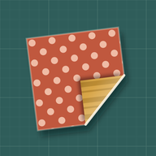

Washi TurnWashi Turn Support
A match-3 puzzle played with two-sided origami paper.
Contact
Write to lamnv260398@gmail.com. Please say which device you play on and, if it is about a level, its desk and number (for example "Washi · No. 12"). In the game, Settings → Support shows this address, and Settings → Privacy policy shows the policy.
How to play
Swap two neighbouring sheets by dragging or by tapping one, then the other. Both sheets turn over, so the colour under each folded corner is the colour you get. Line up three or more of the same face to clear them and meet the level's goals before the turns run out. Exactly four makes a Fan, an L or T makes a Pinwheel, and five makes a Crane. Scissors cut one cell, the Bone Folder turns one sheet over where it lies, and the Paperweight keeps your next swap face up. A swap that makes no line slides back and costs no turn.
Purchases
Jar of Clips adds 600 Clips (can be bought again). Paper Sets unlocks three extra paper looks and Clip Magnet doubles the Clips you earn from levels; both are bought once. Bought something before, or on another device with the same store account? Open Settings → Restore purchases on the home screen, or Restore purchases in the shop.
Progress
Progress is saved on the device only. It is not synced between devices, and it is removed if you delete the app.